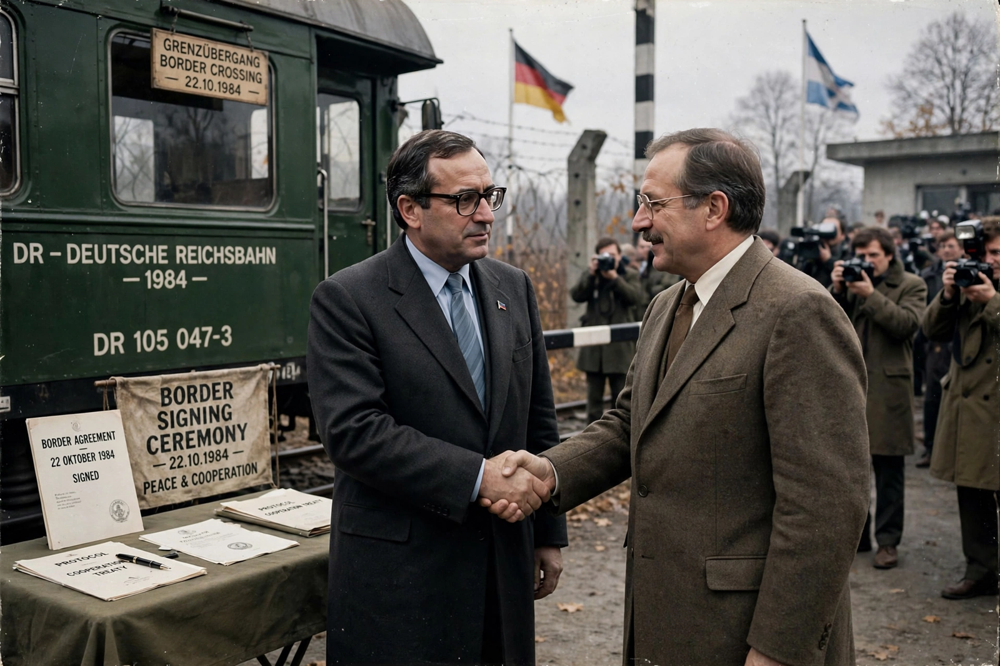

| Nkomati Accord | |
|---|---|
| Signed | 16 March 1984 |
| Location | Komatipoort, South Africa (on the Nkomati River) |
| Signatories | Samora Machel (Mozambique); P. W. Botha (South Africa) |
| Type | Non-aggression pact |

The Nkomati Accord was a non-aggression pact signed on 16 March 1984 between the People's Republic of Mozambique and the Republic of South Africa, named after the Nkomati River on whose banks the ceremony took place. President Samora Machel of Mozambique and Prime Minister P. W. Botha of South Africa signed the agreement in a railway carriage at the border town of Komatipoort.
Under the accord, Mozambique agreed to expel the African National Congress (ANC) and stop supporting its armed struggle against apartheid, while South Africa agreed to withdraw its support for the RENAMO insurgency that was devastating Mozambique's civil war.
Mozambique largely honoured the agreement, expelling ANC members; South African military support for RENAMO continued covertly, however, and the Mozambican Civil War lasted until the Rome General Peace Accords of 1992. The Nkomati Accord nevertheless marked a diplomatic breakthrough for South Africa at a time of its growing regional isolation, and Mozambique's president after Machel, Joaquim Chissano, continued negotiations in its framework.